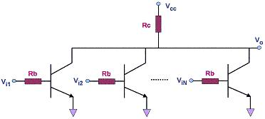

Resistor-Transistor Logic (RTL)
Resistor-Transistor Logic,
or
RTL, refers to
the obsolete technology for designing and fabricating digital
circuits that employ logic gates consisting of nothing but transistors
and resistors. RTL gates are now seldom used, if at all, in modern digital
electronics design because it has several drawbacks, such as bulkiness,
low speed, limited fan-out, and poor noise margin. A basic
understanding of what RTL is, however, would be helpful to any engineer
who wishes to get familiarized with TTL, which for the past many years
has become widely used in digital devices such as logic gates, latches,
buffers, counters, and the like.
Figure 1
shows an example of an
N-input RTL NOR gate. It consists of N
transistors, whose collectors are all tied up to Vcc through a common
resistor, and whose emitters are all grounded. Their bases
individually act as inputs for input voltages Vi (i = 1,2,...,N), which
represent input logic levels. The output Vo is taken across the
collector- resistor node and ground. Vo is only 'high' if the
inputs to the bases of all the transistors are 'low'.

Figure 1. A simple N-input RTL NOR Gate
One of the
earliest gates used in integrated circuits is a
special type of RTL gate known as the
direct-coupled transistor logic (DCTL)
gate. A DCTL gate is one wherein the bases of the transistors are
connected directly to inputs without any base resistors. Thus, the RTL
NOR gate shown in Figure 1 becomes a DCTL NOR gate if all the base
resistors (Rb's) are eliminated. Without the base resistors, DCTL gates are more
economical and simpler to fabricate onto integrated circuits than RTL
gates with base resistors.
The main
drawback
of DCTL gates is that they suffer from a phenomenon known as
current hogging.
Ideally, several transistors that are connected in parallel will share
the load current equally among themselves when they are all brought into
saturation. In the real world, however, the saturation points of
different transistors are attained with different levels of input
voltages to the base (Vbe). As such, transistors that are in parallel
and share the same input voltage (which are commonly encountered in DCTL
circuits) do not share the load current evenly among themselves.
In
fact, once the transistor with the
lowest Vbesat saturates, the other
transistors are prevented from saturating themselves. This causes
the saturated transistor to 'hog' the load current, i.e., it carries the
bulk of the load current whereas those transistors that were prevented
from saturating carries a minimal portion of it. Current hogging,
which prevented DCTL from becoming widely used, is largely avoided in RTL circuits simply by retaining the base resistors.
RTL gates also exhibit
limited 'fan-outs'.
The fan-out of a gate is the
ability of its output to drive several other gates. The more gates
it can drive, the higher is its fan-out. The fan-out of a gate is limited by the
current that its output can supply to the gate inputs connected to it
when the output is at logic '1', since at this state it must be able to drive
the connected input transistors into saturation.
Another weakness of
an RTL
gate is its
poor noise
margin.
The noise margin of a logic gate for logic level '0',
Δ0, is defined as the
difference between the maximum input voltage that it will
recognize as a '0' (Vil) and the maximum voltage that may be applied to it as a '0'
(Vol of the driving gate connected to it). For logic level '1', the noise
margin
Δ1 is the
difference between the minimum input voltage that may be applied to it as a '1'
(Voh of the driving gate connected to it) and the minimum input voltage that
it will
recognize as a '1' (Vih). Mathematically,
Δ0 = Vil-Vol
and
Δ1 = Voh-Vih.
Any noise
that causes a noise margin to be overcome will result in a '0' being
erroneously read as a '1' or vice versa. In other words, noise
margin is a measure of the immunity of a gate from reading an input
logic level incorrectly.
In an RTL
circuit, the collector output of the driving transistor is directly
connected to the base resistor of the driven transistor. Circuit
analysis would easily show that in such an arrangement, the differences
between Vil and Vol, and between Voh and Vih, are not that large.
This is why RTL gates are known to have
poor noise
margins
in comparison to DTL
and TTL gates.
See Also:
TTL Parameters; Logic
Gates; RTL; DTL; CMOS
HOME
Copyright
©
2005
www.EESemi.com.
All Rights Reserved.